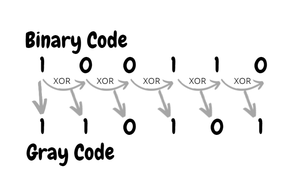
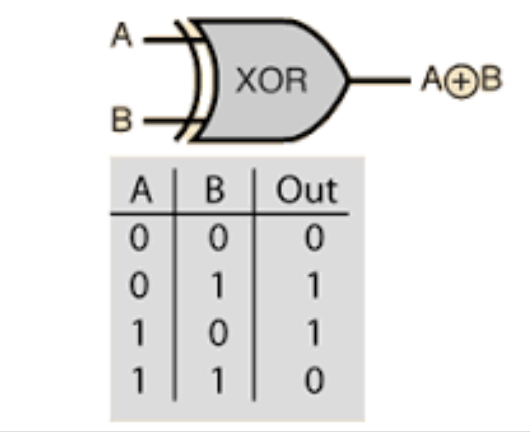
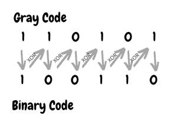
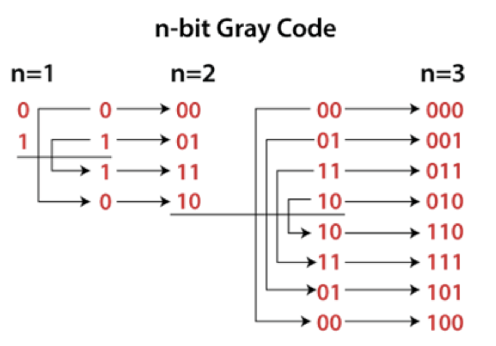

Chapter X: Binary Encoding Scheme
Section X.2 Non-Weighted Codes
Binary Encoding
Although the binary number system has many practical advantages and is widely used in digital computers, in many cases it is convenient to work with the decimal number system, especially when the communication between man and the machine is extensive since most numerical data generated by man are in terms of decimal numbers. To simplify the communication problem between man and machine, a number of codes have been devised so that the decimal digits are represented by sequences of binary digits.Classification of binary codes
-
X.1 Weighted Codes
- *Binary to Decimal
- *BCD Code
- *Self-Complementing Code
- *Two's complement
-
X.2 Non-Weighted Codes
- *Excess-3 Code
- *Gray Code
-
Alphanumeric Codes
- *American Standard Code for Information Interchange (ASCII)
- *Extended Binary Coded Decimal Interchange Code (EBCDIC)
-
X.3 Error Detecting Codes
- *Parity Bit
-
X.4 Error Correcting Codes
- *7-Bit Hamming Code
Nonweighted Codes
In this type of binary code, the positional weights are not assigned. The examples of non-weighted codes are Excess-3 code and Gray code.Excess-3 code
The Excess-3 code is also called as XS-3 code. It is a non-weighted code used to express decimal numbers. The Excess-3 code words are derived from the 8421 BCD code words adding \( (0011)_2 \)or \( (3)_{10} \) to each code word in 8421. The excess-3 codes are obtained as follows :| Decimal Digit (N) | Excess-3 Code (N+3) | 1's Complement of Excess-3 | Decimal 9's Complement (9-N) | Excess-3 Code of 9-N |
|---|---|---|---|---|
| 0 | 0011 | 1100 | 9 | 1100 |
| 1 | 0100 | 1011 | 8 | 1011 |
| 2 | 0101 | 1010 | 7 | 1010 |
| 3 | 0110 | 1001 | 6 | 1001 |
| 4 | 0111 | 1000 | 5 | 1000 |
| 5 | 1000 | 0111 | 4 | 0111 |
| 6 | 1001 | 0110 | 3 | 0110 |
| 7 | 1010 | 0101 | 2 | 0101 |
| 8 | 1011 | 0100 | 1 | 0100 |
| 9 | 1100 | 0011 | 0 | 0011 |
Excess-3 code Application
- 1. Error Detection Example Scenario: Decimal Value Transmission in a Digital System
- 1. Check the received code 1111 Is it a valid Excess-3 code? No
- 2. Action: Since 1111 is invalid, the system flags it as an error.
Suppose we need to send a sequence of decimal number over a network, and we encode them using Excess-3:
Decimal 4: Excess-3 code 0111
Error Scenario:
A single-bit error occurs during transmission, and 0111 (for 4) is received as 1111.
Error Detection Process:
Valid Excess-3 codes: 0011, 0100, 0101, ..., 1100.
Gray Code
Gray code, also known as reflected binary code, is a type of binary numbering system where two successive values differ by only
one bit.
It is a non-weighted code and it is not an arithmetic code. That means there are no specific weights assigned to
the bit position. It has a very special feature that, only one bit will change each time the decimal number is
incremented as shown in Fig X.1. As only one bit changes at a time, the gray code is called as a unit distance code.
The gray code is a
cyclic code
. The term "cyclic" in the context of Gray code means that the Gray code sequence forms a closed loop.
The last value in the sequence transitions back to the first value, and this transition involves only a single-bit change, just like any other consecutive values in Gray code.
Gray code cannot be used for arithmetic operations.
In this code, two consecutive values are differed by one bit of binary digits.
Binary to Gray conversion :
- The Most Significant Bit (MSB) of the gray code is always equal to the MSB of the given binary code.
- Other bits of the output gray code can be obtained by XOR binary code bit at that index and previous index.
Note: XOR, short for "exclusive or", is a logical operation that returns true if the inputs are different,
and false (or 0) if they are the same.


Gray to binary conversion :
- The Most Significant Bit (MSB) of the binary code is always equal to the MSB of the given gray code.
- Other bits of the output binary code can be obtained by checking the gray code bit at that index. If the
current gray code bit is 0, then copy the previous binary code bit, else copy the invert of the previous
binary code bit.

n-bit Gray Code Generating
The n-bit Gray code is a member of a class called reflected codes. The term ″reflected″ is used to designate codes
which have the property that the n-bit code can be generated by reflecting the (n-1)st-bit code, as illustrated
here
(left to right is the 1 bit, the two bit, the three bit.
Steps:
- 1. Start with 1-bit Gray Code:
- 0
- 1
- 2. Reflect the list
- 3. Prefix
0 to each code in the original list and 1 to each in the reflected list.
- 4. Concatenate the two lists to form the next level Gray Code.
- 5. Repeat steps 2–4 until you reach the desired n-bit Gray Code.

Figure X.1
A four-bit Gray code is shown in the following table:
Decimal
Binary
Gray Code
0 0000 0000 1 0001 0001 2 0010 0011 3 0011 0010 4 0100 0110 5 0101 0111 6 0110 0101 7 0111 0100 8 1000 1100 9 1001 1101 10 1010 1111 11 1011 1110 12 1100 1010 13 1101 1011 14 1110 1001 15 1111 1000
Key Characteristics:
- 1. Single-Bit Change:
Successive numbers in Gray code differ by exactly one bit, reducing ambiguity in transitions.
- 2. Cyclic:
The Gray code sequence wraps around, forming a loop where the last value transitions to the first value with a single-bit change.
- 3. Reflection:
The Gray code sequence for \(n+1\) bits is derived by reflecting the \(n\)-bit sequence and appending 0 to the original sequence and 1 to the reflected sequence.
Gray code Application
Rotary Encoders: Gray code is commonly employed in rotary encoders, which are used in various devices like
robotics, industrial control systems, and navigation systems. It ensures accurate tracking of rotational position
by encoding the position values in Gray code, where only one bit changes at a time. This property helps to prevent
errors or glitches during the position tracking process.
Example: 3-Bit Gray Code Rotary Encoder
Imagine a rotary encoder divided into \(2^3=8\) positions. These positions are encoded using 3-bit Gray code:
Position
Gray Code
Binary Code (for comparison)
0 000 000 1 001 001 2 011 010 3 010 011 4 110 100 5 111 101 6 101 110 7 100 111
Explanation:
- 1. Gray Code Property:
From position 0 (000) to position 1 (001): Only the last bit changes.
From position 1 (001) to position 2 (011): Only the middle bit changes.
This single-bit change minimizes errors during transitions.
- 2. Binary Code Issue:
In binary code, transitions like 011 to 100 (position 3 to 4) involve multiple bit changes (3 bits flip), increasing the chance of errors.
Reference
BCD Code
Binary Codes
Gray to
Binary and Binary to Gray conversion
Gray Code
- 0
- 1
0 to each code in the original list and 1 to each in the reflected list.| Decimal | Binary | Gray Code |
|---|---|---|
| 0 | 0000 | 0000 |
| 1 | 0001 | 0001 |
| 2 | 0010 | 0011 |
| 3 | 0011 | 0010 |
| 4 | 0100 | 0110 |
| 5 | 0101 | 0111 |
| 6 | 0110 | 0101 |
| 7 | 0111 | 0100 |
| 8 | 1000 | 1100 |
| 9 | 1001 | 1101 |
| 10 | 1010 | 1111 |
| 11 | 1011 | 1110 |
| 12 | 1100 | 1010 |
| 13 | 1101 | 1011 |
| 14 | 1110 | 1001 |
| 15 | 1111 | 1000 |
| Position | Gray Code | Binary Code (for comparison) |
|---|---|---|
| 0 | 000 | 000 |
| 1 | 001 | 001 |
| 2 | 011 | 010 |
| 3 | 010 | 011 |
| 4 | 110 | 100 |
| 5 | 111 | 101 |
| 6 | 101 | 110 |
| 7 | 100 | 111 |
From position 1 (001) to position 2 (011): Only the middle bit changes.
This single-bit change minimizes errors during transitions.